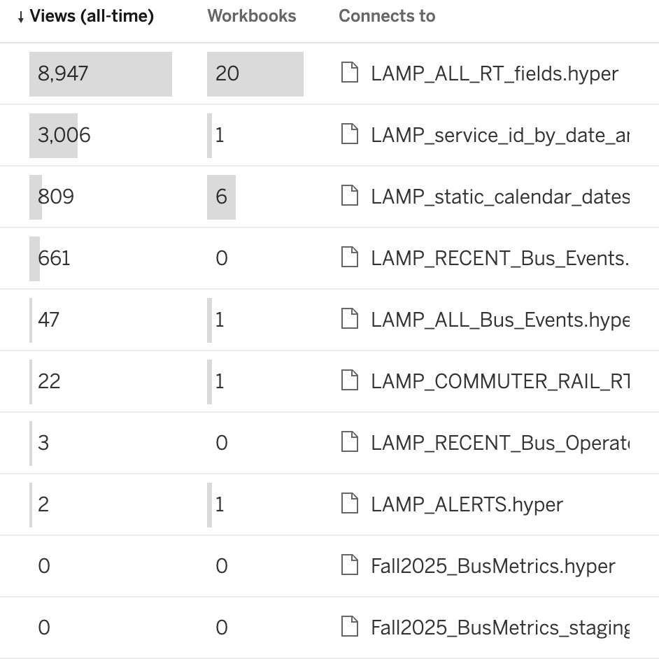

sequenceDiagram
us->>+users: How does this look?
users-->>-us: Where can I find it?
us->>+users: Here's an export!
users-->>-us: Let's add a column
us->>+users: How about now?
users-->>-us: Good!
us->>+users: Okay, it's in production
users-->>-us: I found a new use! Let's change the granularity
us->>+users: Okay, that'll be a new table
users-->>-us: Gotcha, how long will that take?
What users expect, what we provide
crunkel@mbta.com
2026-03-11
We articulated 3 outcomes we want
- We measure how are data are used
- Users access existing data without asking us
- Users create and own analytical views of our data
But today
- We can only measure views of Tableau data sources
- Users ask us for data, for access, and to understand what data we produce
- We create and maintain analytical views of our data
Our current implementations keep us from these outcomes
- To find data, users need to browse several different s3 buckets and understand our ingestion architecture
- We have no tooling to measure usage of queries directly to s3
- AWS IAM prevents us from granting users access to individual columns
- Tableau has limited tools to query files in s3
New implementations could help us achieve these outcomes
- A data catalog could allow
- users to quickly list available datasets and describe their contents
- us to control access at the column level
- us to measure usage from DuckDB, Polars, and more
- A “serverless” query engine could allow
- us to measure queries from Tableau
- users to build new analytical views from Tableau
- A dedicated pipeline orchestrator could allow
- us & users to schedule and monitor analytical views
- us to measure queries to Tableau
- us & users to isolate failing jobs from successful jobs
One example
You want to calculate average speed by bus route
1. You query it locally in DuckDB or Polars
1. You want speed, but have no need for operator name
We decide between 4 unscalable options:
- Grant you access beyond the principle of least privilege
- Deploy a new table with all the data except operator name
- Deny your access request
- Create exports of the data
1. We grant you access, you query
DuckDB
Different query engines provide different identifiers that users need to remember.
Polars
Both of these yield
| vehicle_id | route_id | … | operator_name |
|---|---|---|---|
| y1234 | 1 | … | Charlie |
| y56789 | 1 | … | Charlene |
1. With a data catalog
DuckDB
Users find consistency…
Polars
..and we can control access at the column level without creating new storage:
| vehicle_id | route_id | … |
|---|---|---|
| y1234 | 1 | … |
| y56789 | 1 | … |
2. You find it in Tableau
2. But it doesn’t exist yet!
We decide between 2 unscalable options:
- Create a new single-user data source that we maintain
- Deny your request
2. We spend 2-6 weeks creating a new data source
2. With a tool to create analytical views
sequenceDiagram
users->>+users: How does this look?
users-->>-users: Good!
users->>+users: Let me make a new PR
users->>+us: Can I have some more access for this column?
us-->>-users: Sure.
users->>+users: Okay, Now I can make a new table.
3. Analyze! Share! Decide!
3. Who knows if you actually use(d) it?
3. Today, we can learn about Tableau usage

3. With a data catalog and/or AWS CloudTrail, we can learn about S3 usage as well
What tools should we choose?
Data catalogs and orchestrators are not coupled: each would be beneficial on its own. On the other hand, query engines are more tightly coupled to data catalogs:
- Unity Catalog → Trino
- AWS Glue → AWS Athena
- DuckLake provides native integration with a serverless query engine
See this Notion for a feature comparison.
I recommend Dagster
for its data-aware orchestration and monitoring UI.
We should evaluate the decision of a data catalog and query engine together.
On the one hand, Unity Catalog integrates natively with DuckDB and Polars, on the other hand, AWS Glue provides a more mature catalog and allows us to manage access using Terraform.